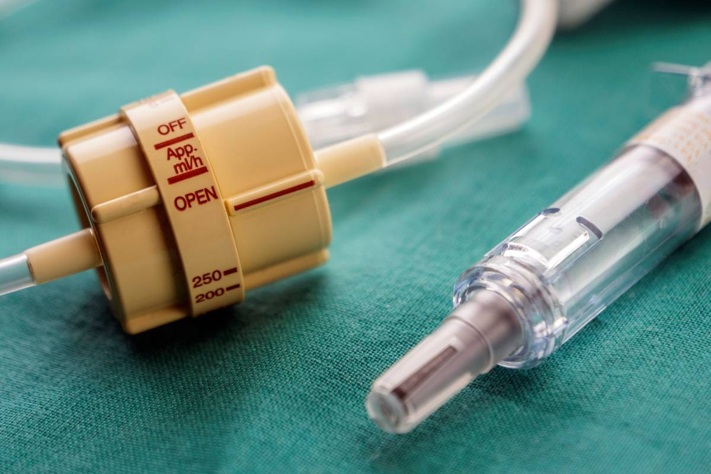
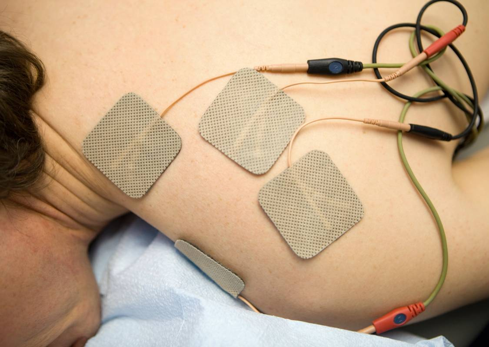
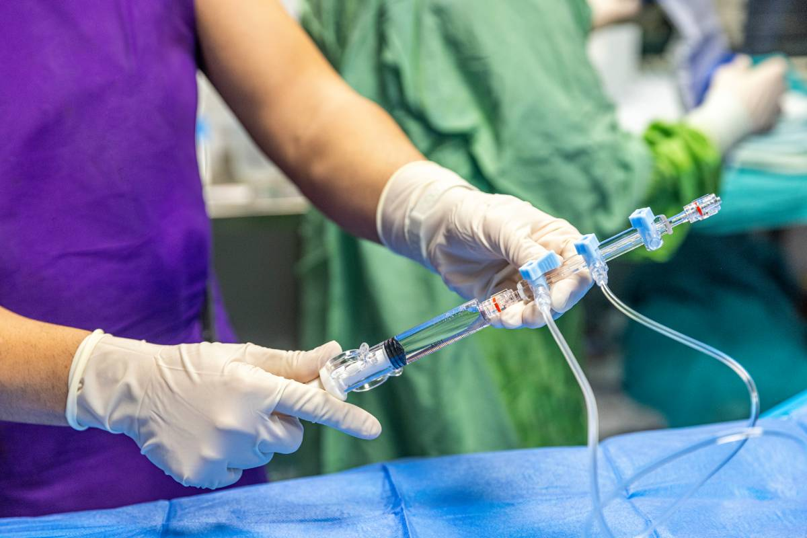
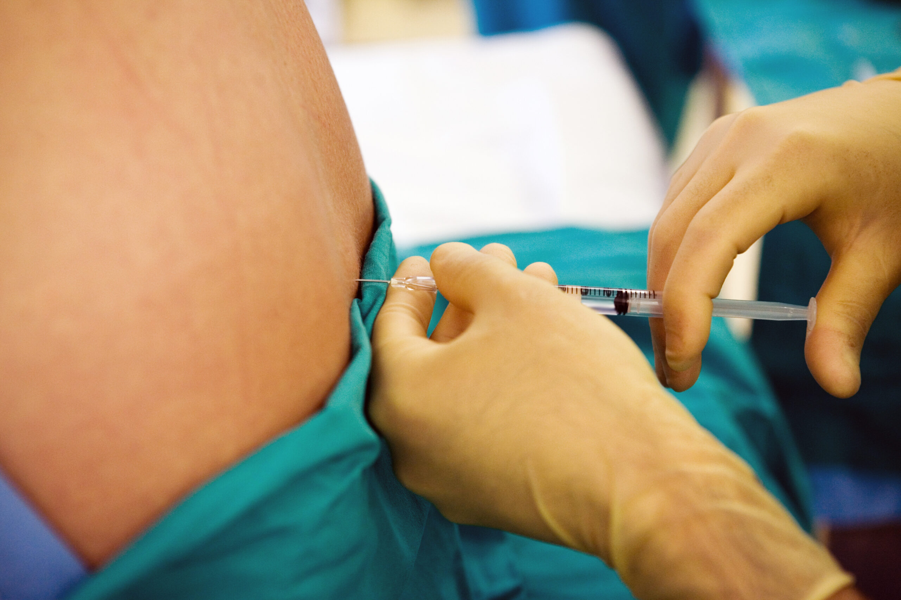

Preoperative Oral Medication for Analgesia
The evolution of postoperative pain management has shifted significantly from reactive symptomatic relief toward the implementation of preemptive analgesic strategies.
Read MoreStay informed with the latest news, research, and insights about anesthesia services and perioperative care.
The evolution of postoperative pain management has shifted significantly from reactive symptomatic relief toward the implementation of preemptive analgesic strategies.
Read More
Clinical management of postoperative pain has undergone a paradigm shift toward multimodal analgesia approaches that minimize opioid dependence.
Read MoreQuantitative neuromuscular monitoring has become an essential component of modern anesthetic practice and is critical for patient safety.
Read MoreA surgical time-out is a structured pause that occurs immediately before an invasive procedure begins, designed to prevent wrong-site, wrong-procedure, and wrong-patient errors.
Read MoreReflecting on the global changes in healthcare and anesthesia practice since the emergence of COVID-19 in 2020.
Read MoreAddressing healthcare access and workforce challenges in the Veterans Health Administration and the impact on anesthesia services.
Read More
Understanding the physiological mechanisms behind intravenous injection pain and evidence-based strategies to minimize patient discomfort.
Read More
A clinical overview of phase 2 neuromuscular block, its mechanisms, recognition, and management in the perioperative setting.
Read More
A comprehensive overview of modern inhalational anesthetic agents, their pharmacological properties, clinical applications, and safety considerations.
Read MoreExamining the evidence behind topical, regional, and general anesthesia approaches for cataract surgery in ambulatory settings.
Read MoreExploring the relationship between systemic inflammatory markers and the risk of respiratory complications in post-cardiac surgery patients.
Read MoreComparing the efficacy and timing of antiemetic administration before and after surgery to prevent postoperative nausea and vomiting.
Read More
How artificial intelligence is reshaping scheduling, billing, documentation, and operational efficiency in anesthesia and perioperative care settings.
Read More
Tracing the development of propofol from its discovery to its status as one of the most widely used induction agents in modern anesthesia practice.
Read More
A clinical review of rare but clinically significant adverse effects associated with anesthetic agents and techniques in perioperative care.
Read More
Understanding defasciculation — the use of small doses of non-depolarizing agents prior to succinylcholine to reduce fasciculations and associated complications.
Read More
Reviewing the clinical applications of topical anesthetic agents across surgical specialties, including mechanisms of action and best practices for use.
Read More
Strategies for managing respiratory support in the immediate post-extubation period to reduce the risk of reintubation and pulmonary complications.
Read MoreExamining the evidence for combining propofol with volatile anesthetic agents as a strategy to reduce postoperative nausea and vomiting incidence.
Read More
A clinical review of evidence-based indications for intravenous albumin administration in perioperative and critical care settings.
Read More
Exploring the expanding role of dexamethasone in anesthesia — from PONV prophylaxis to airway management, anti-inflammatory effects, and analgesic properties.
Read More
A comprehensive review of analgesic options for labor pain management, comparing neuraxial techniques with systemic and non-pharmacological approaches.
Read MoreAnalyzing how prone positioning affects pulmonary mechanics, gas exchange, and ventilatory parameters in ARDS patients undergoing surgery.
Read MoreEvidence-based strategies for preventing and managing peri-partum hemorrhage, including the anesthesiologist's critical role in rapid response and resuscitation.
Read MoreA clinical guide to the unique considerations, techniques, and patient safety priorities that define anesthesia practice in obstetric settings.
Read MoreA review of ARDS pathophysiology, diagnostic criteria, and the perioperative implications for anesthesia providers managing high-risk surgical patients.
Read More
Examining the epidemiological evidence on how gender influences overdose mortality trends and the implications for opioid stewardship in perioperative care.
Read More
A foundational review of acid-base physiology for anesthesia providers, covering buffer systems, compensation mechanisms, and clinical interpretation of arterial blood gas results.
Read More
Evaluating the pharmacology, clinical applications, and evidence base for liposomal bupivacaine as a prolonged-release local anesthetic in postoperative pain management.
Read MoreDefining the full scope of contemporary anesthesia practice — from preoperative assessment to intraoperative management, recovery, and ambulatory care oversight.
Read More